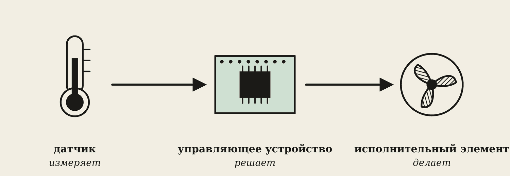
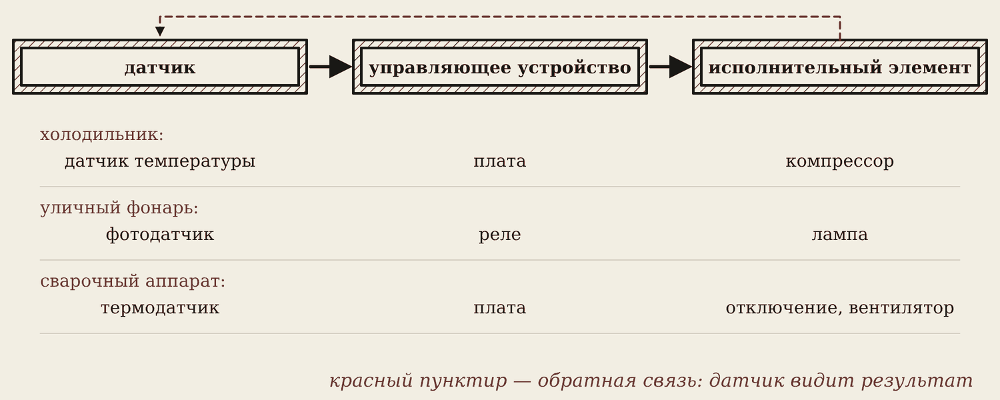
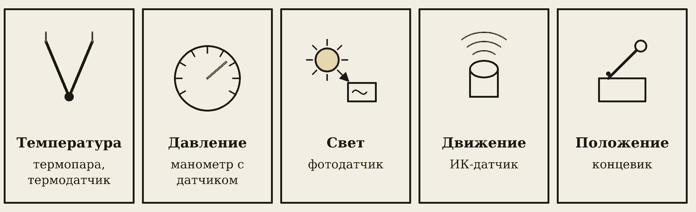
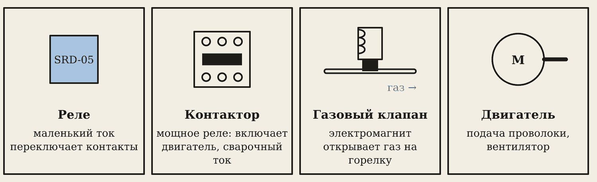
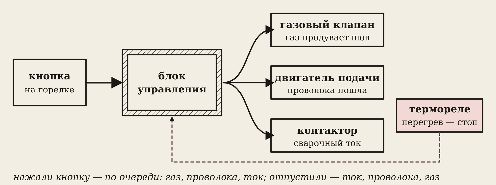
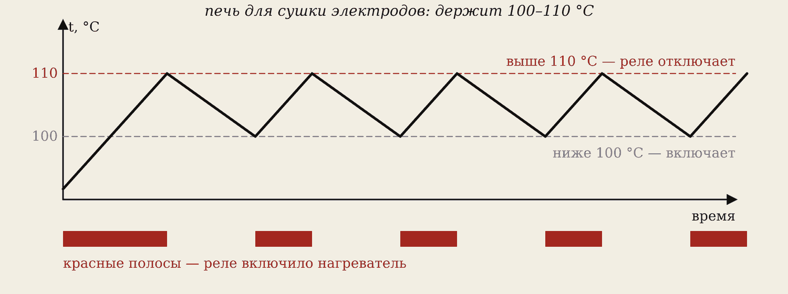
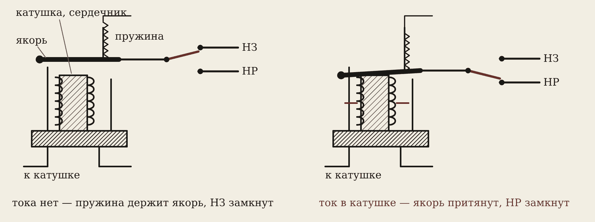
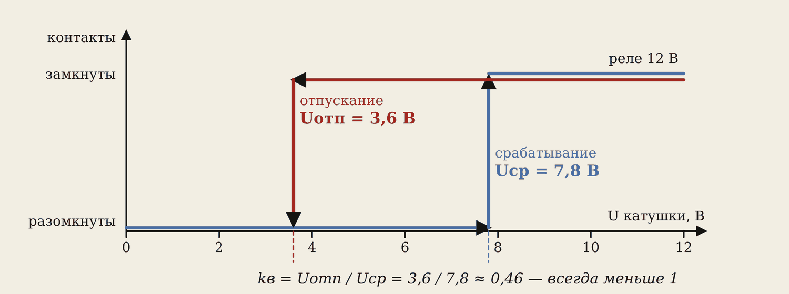
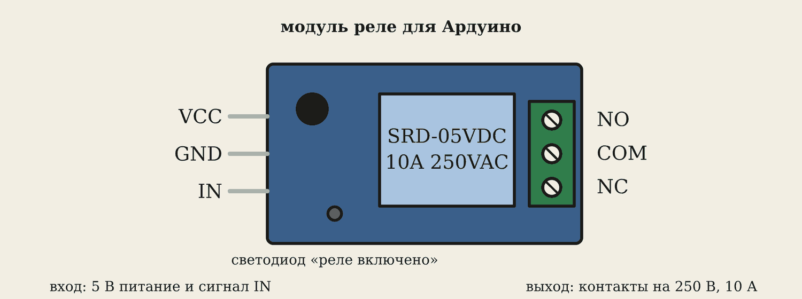

1. Три звена автоматики

Автоматика — когда машина делает работу сама, без человека. Любая система автоматики состоит из трёх звеньев:
- Датчик — измеряет (температуру, давление, свет…).
- Управляющее устройство — сравнивает с заданием и решает (плата, реле, контроллер).
- Исполнительный элемент — делает (включает компрессор, открывает газ, крутит вентилятор).

Холодильник. Датчик температуры показал +7 °C → плата сравнила с заданными +4 °C → включила компрессор. Стало +3 °C → датчик это увидел → плата выключила компрессор.
Когда датчик видит результат работы исполнителя, это называется обратная связь.
2. Датчики

Датчик превращает неэлектрическую величину в электрический сигнал:
- температура — термопара (спай двух разных металлов: нагрели — появилось напряжение), термодатчик;
- давление — датчик в баллоне или пневмосистеме;
- свет — фотодатчик уличного фонаря;
- движение — ИК-датчик в подъезде;
- положение — концевик: рычажок, который нажимается, когда деталь доехала до места.
3. Исполнительные элементы

- Реле — маленький ток в катушке переключает контакты.
- Контактор — мощное реле: включает двигатель или сварочный ток.
- Электромагнитный клапан — открывает газ на горелку.
- Двигатель — подаёт проволоку, крутит вентилятор.
4. Автоматика в сварке

Вы нажали кнопку на горелке полуавтомата — блок управления по очереди:
- открывает газовый клапан (газ продувает зону сварки);
- включает подачу проволоки;
- включает сварочный ток контактором.
Отпустили кнопку — в обратном порядке, а газ ещё секунду-две течёт и защищает остывающий шов.
Термореле в трансформаторе или на радиаторе инвертора при перегреве отключает аппарат, пока он не остынет.
5. Терморегулятор и «зазор»

Печь для прокалки электродов держит 100–110 °C: ниже 100 °C реле включает нагреватель, выше 110 °C — выключает.
Почему не ровно при 100 °C? Датчик всегда чуть «дрожит» — 99,9…100,1. Без «зазора» реле щёлкало бы десятки раз в минуту и быстро сгорело. Такой зазор между порогами называют гистерезисом.
6. Как устроено реле

Реле — это электромагнит с контактами:
- катушка на стальном сердечнике;
- якорь — подвижная стальная пластина, её держит пружина;
- контакты: подвижный (общий), нормально замкнутый НЗ и нормально разомкнутый НР.
Тока нет — пружина держит якорь, замкнут НЗ. Подали ток — сердечник притянул якорь, замкнулся НР. Щёлк!
Запомните
«Нормально» значит — когда тока в катушке нет. На модулях Ардуино: NO — НР, NC — НЗ, COM — общий.
Катушке хватает 5 В и 70 мА, а контакты выдерживают 250 В и 10 А: маленький ток управляет большим, и цепи при этом не соединены между собой.
7. Срабатывание и отпускание

- Напряжение срабатывания Uср — наименьшее напряжение на катушке, при котором якорь притягивается.
- Напряжение отпускания Uотп — напряжение, при котором якорь возвращается. Оно меньше Uср: притянутый якорь лежит на сердечнике, и держать его легче, чем притянуть.
kв = Uотп / Uср (всегда меньше 1)
Реле 12 В: Uср = 7,8 В, Uотп = 3,6 В. kв = 3,6 / 7,8 ≈ 0,46.
Это тот же «зазор», что у терморегулятора: благодаря ему реле не дребезжит, когда напряжение чуть «гуляет».
8. Модуль реле для Ардуино

Ардуино не может питать катушку реле сам: вывод платы даёт около 20 мА. Поэтому на модуле стоят транзистор-ключ (пара 23) и диод параллельно катушке — он гасит выброс напряжения при отключении (самоиндукция).
Осторожно
На занятиях к клеммам модуля подключаем только 12 В. Сеть 220 В — только электрик и только в закрытом корпусе.
Словарик
- Автоматика — машина делает работу сама.
- Датчик — измеряет и даёт электрический сигнал.
- Исполнительный элемент — выполняет работу: реле, контактор, клапан, двигатель.
- Обратная связь — датчик видит результат работы.
- Термопара — датчик температуры из двух разных металлов.
- Концевик — датчик положения.
- Реле — электромагнит, переключающий контакты.
- Якорь — подвижная пластина реле.
- НЗ / НР — нормально замкнутый / нормально разомкнутый контакт.
- Uср, Uотп — напряжения срабатывания и отпускания.
- kв — коэффициент возврата.
- Гистерезис — «зазор» между порогами включения и выключения.
Эталоны в тетрадь
Перепишите в тетрадь по билетам — каждый эталон на отдельную страницу, с рисунком и строкой «Мой пример».
Автоматика и реле
Системы автоматики: датчик – управляющее устройство – исполнительный элемент. Датчики. Реле: срабатывание, отпускание, коэффициент возврата.
- Система автоматики: датчик (измеряет) → управляющее устройство (решает) → исполнительный элемент (делает). Пример: холодильник — датчик температуры → плата → компрессор. (Схема блоками.)
- Датчики неэлектрических величин превращают их в электрический сигнал: температуры (термопара), давления, света, движения, положения (концевик).
- Исполнительные элементы: реле, контактор, электромагнит, двигатель, клапан.
- Реле: при токе в катушке притягивает якорь и переключает контакты. Срабатывание — наименьший ток (напряжение), при котором якорь притягивается. Отпускание — когда он возвращается (при меньшем токе). Коэффициент возврата kв = Uотп / Uср, всегда меньше 1.
- В сварке: термореле отключает аппарат при перегреве; газовый клапан и контактор включаются кнопкой на горелке.
Проверь себя
Сначала ответьте сами — в тетради или вслух. Потом нажмите на вопрос, чтобы увидеть ответ.
1Назовите три звена системы автоматики на примере холодильника.
Датчик температуры — плата — компрессор.
2Термопара — это датчик или исполнительный элемент?
Датчик температуры.
3Что первым включает полуавтомат после нажатия кнопки?
Газовый клапан.
4Зачем терморегулятору «зазор» между порогами?
Чтобы реле не щёлкало без конца у порога и не сгорело.
5Какие контакты реле замкнуты, когда тока в катушке нет?
Нормально замкнутые (НЗ, NC).
6Почему Uотп меньше Uср?
Притянутый якорь лежит на сердечнике, зазора почти нет — держать его легче, чем притянуть.
7Uср = 9 В, Uотп = 4,5 В. Найдите kв.
kв = 4,5 / 9 = 0,5.
8Зачем на модуле реле транзистор?
Вывод Ардуино даёт слишком мало тока для катушки; транзистор-ключ её включает.
Попробуйте в лаборатории
Откройте на телефоне или компьютере — ничего устанавливать не нужно.
Ответы к «Проверь себя»
- Датчик температуры — плата — компрессор.
- Датчик температуры.
- Газовый клапан.
- Чтобы реле не щёлкало без конца у порога и не сгорело.
- Нормально замкнутые (НЗ, NC).
- Притянутый якорь лежит на сердечнике, зазора почти нет — держать его легче, чем притянуть.
- kв = 4,5 / 9 = 0,5.
- Вывод Ардуино даёт слишком мало тока для катушки; транзистор-ключ её включает.